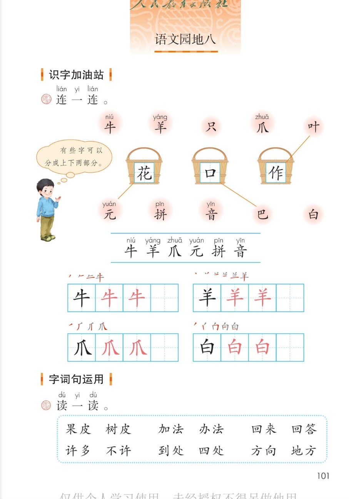
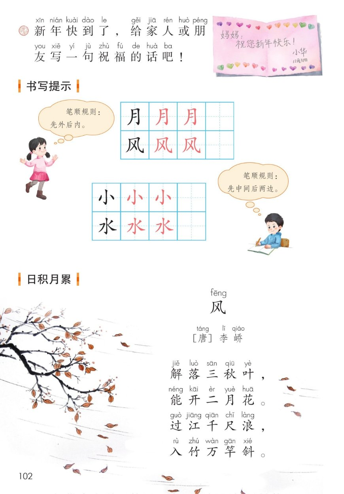
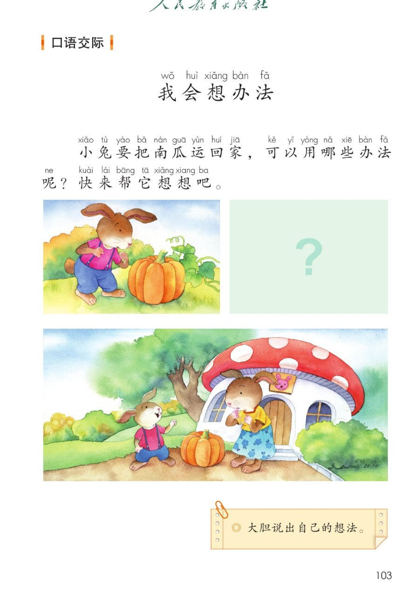
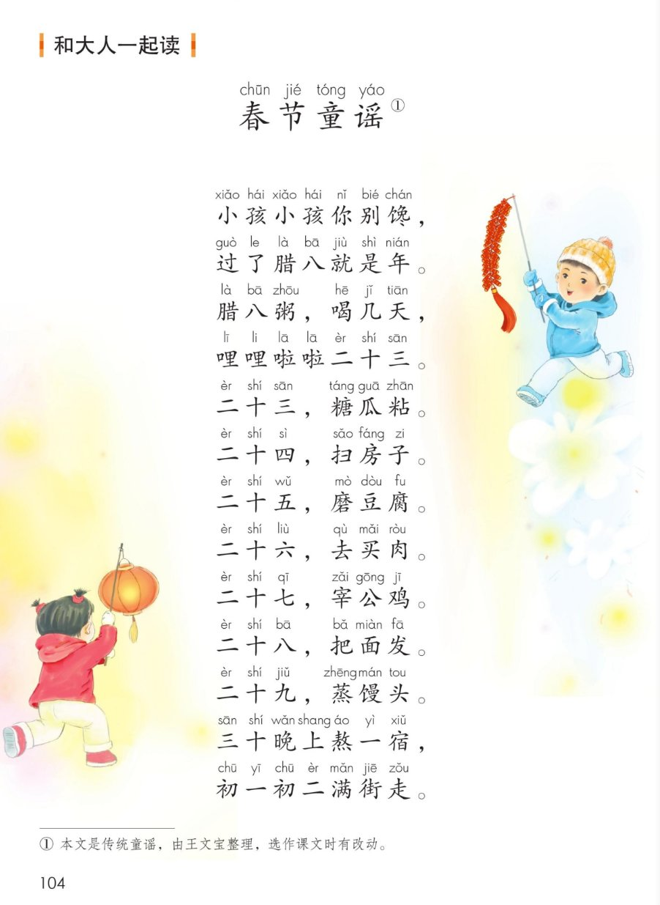

×
🔊 手机听不到声音怎么办？
① 先把手机
媒体音量调大 ，确认没开静音、没连蓝牙耳机；在微信里打开的，点右上角「⋯ → 用浏览器打开」。
② 还是没声音？到应用商店免费下载
Microsoft Edge 浏览器 （它自带朗读发声），用它打开本页面就能出声。
③ 换了 Edge 仍然没声音，说明这部手机的
硬件/系统不支持 网页朗读（多为老旧机型）；近几年买的新手机一般都能正常播放。
→ 打开声音自检
统编版 · 一年级上册 · 第八单元 · 语文园地八
语文园地八
按结构给字分类、读好同字词语、写一句新年祝福、记两条笔顺规则、背《风》、帮小兔想办法、和大人一起读《春节童谣》。
连一连 10 字 会认 6 字 会写 4 字 词语 6 组 日积月累《风》 口语交际 春节童谣 闯关 10 题
这个园地学什么： 把 10 个字按结构送进三个篮子 ；发现 6 组词语里都有一个相同的字 ；
学写新年贺卡 ；记住「先外后内 」「先中间后两边 」两条笔顺规则；
背古诗《风 》；帮小兔大胆说出运南瓜的办法 ；最后和大人一起读《春节童谣 》。🏮
页面上的拼音照课本标注，只供看，不进朗读；结构说明、诗意白话、办法示例是帮你说给大家听的，课本只印字、词和原句，练习示例均已单独标明。
课本第 101 页 点字读字，点篮子听规则
题目：连一连。 💡 学习伙伴提示：「有些字可以分成上下两部分 」。
三个篮子其实是三种字的结构 ：花 =上下结构、口 =独体字、作 =左右结构。
课本已连好 3 个例子：元→花 、巴→口 、叶→作 （下面标了「课本示例」）。🧺
🔊 按结构把 10 个字连起来读
课本第 101 页 点一张读一张
识字条 · 连起来读
牛 羊 爪 元 拼 音 —— 这 6 个字都在上面的「连一连」里出现过
课本第 101 页 先看笔顺，再动笔
✍️ 写字小提醒： 牛 最后一竖要出头、压竖中线；羊 两点分开、三横长短不同；
爪 中间一竖要直、最后一捺舒展；白 先短撇，里面两横别漏。
课本上「黑字示范 → 两格红字描红 → 一格自己写 」。
课本第 101 页 点一组读一组
题目：读一读。 🔍 读完全部 12 个词，你会发现一个秘密：
每组都有一个相同的字 ——同一个字，换个伙伴就是新词。
🔊 六组词语连起来读
🌼 一字开花（练习）： 用每组共同的那个字再组词，比如
皮 →皮衣、牛皮；法 →方法、书法；回 →回家、回头；
方 →前方、东方……看谁开的花最多。
上面这些是拓展练习，不是课本词语，说自己想到的词也可以。
课本第 102 页 点贺卡听读
题目：新年快到了，给家人或朋友写一句祝福的话吧！ 贺卡格式 ：左上方 写想祝福的人 → 中间写一句祝福的话 →
右下方 写自己的名字和日期。
💌 写之前想三件事： ① 祝福谁 （称呼）→ ② 说哪一句祝福的话 →
③ 别忘了署名和日期 。写给长辈用「您 」，写给同学用「你 」。✍️
课本第 102 页 点卡听规则
两条笔顺规则： 「先外后内 」和「先中间后两边 」。
按规则一笔一笔写，字就又稳又好看。🖌️
🔊 两条规则连起来读
课本第 102 页 点一句读一句
🔎 一个有趣的发现： 这首诗四句里一个「风」字都没有 ，
却句句都在写风——风看不见，我们从树叶、春花、江浪、竹林 身上看见它。🍃
🎵 全诗连读
🐢 放慢背一背（每句读两遍）
课本第 103 页 点卡听读，大胆说
我会想办法。 题目原文：小兔要把南瓜运回家，可以用哪些办法呢？快来帮它想想吧。 大胆说出自己的想法。 」——办法不止一种，说清楚就行。🐰🎃
练习示例 · 课本留白 点卡听读
🗣️ 把办法连起来说一遍
🗣️ 怎么说得更清楚： 用「先 → 再 → 最后 」把做法连起来，
再补一句「为什么这样最省力 」。和别人想得不一样也没关系，
大胆说、说清楚 就是好办法。🌟
课本第 104 页 点一行读一行
🏮 怎么读： 这首童谣从腊八 一天天数到大年初一初二 ，
像一张过年的日程表。可以和大人一人读一句 ，或者拍着手打节奏读。
脚注：① 本文是传统童谣，由王文宝整理，选作课文时有改动。
🎵 全文连读
🔁 跟读模式（读完一行停一停）
🐢 放慢背一背（每行读两遍）
按童谣顺序 点卡听读
📅 从腊八数到大年初二
💬 读后想一想： 你家过年会做什么？问问家里的大人，
再和同学说一说；也可以学着童谣的样子，把自家过年的事编成一句新童谣。🧧
点题目可以听题，点选项就判对错，答完自动算分
已经答 0 题，答对 0 题。
点图放大

第 101 页 · 识字加油站连一连 · 识字条 · 田字格 · 字词句运用

第 102 页 · 写祝福语贺卡 · 书写提示 · 日积月累《风》

第 103 页 · 口语交际《我会想办法》三幅图

第 104 页 · 和大人一起读《春节童谣》全文 · 脚注